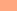
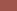

Evaluation de l'extension urbaine sur de la commune de La Couarde-sur-Mer
Progression de l'urbanisation de 1950 à 2014
Légende
Evolution urbaine
- Depuis 1950
-  Depuis 1969
-  Depuis 1991
- Depuis 2014
Limite de commune
- La couarde-Sur-Mer
- Autres communes